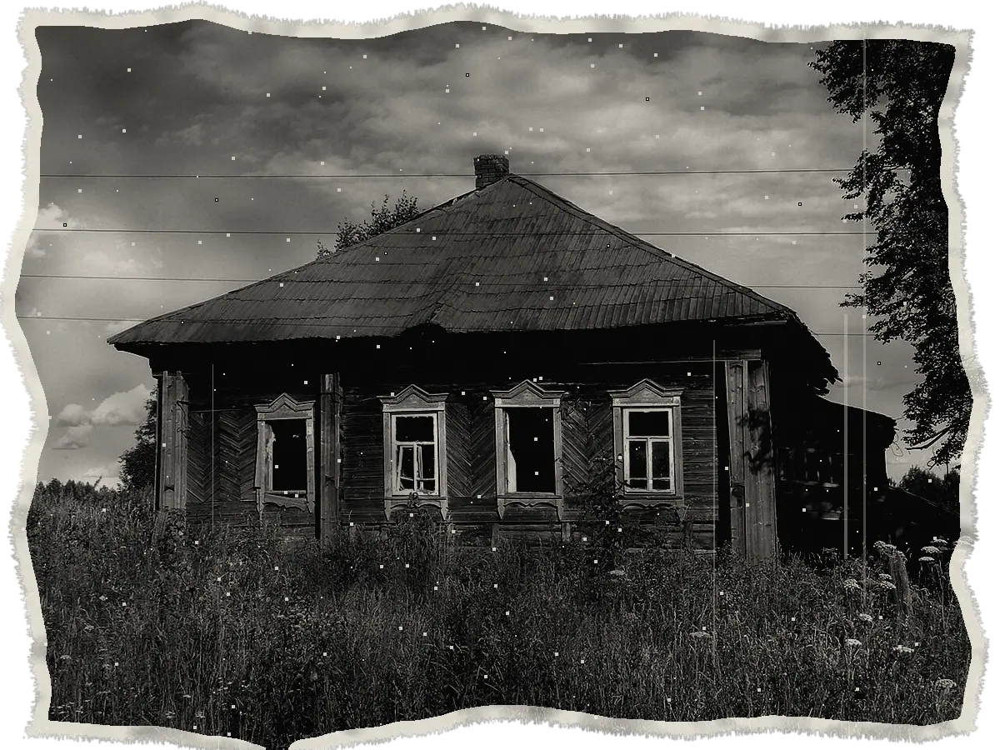

ТОМ I · ЛИСТ A · 01 / 12
ПОРОГ
Комната, мгновение и граница, которая нигде не проведена
Этнография смерти в России редко бывает рассказом об умирании. Это рассказ о том, что живые делают потом в комнате, — и о том, как быстро эта комната становится границей.
Документировано в основном в XIX–XX веках · Европейская Россия; фиксация неравномерна · Православная практика; местный народный обычай

A / 01
Комната с открытым окном
В описаниях, которые этнографы собирали в русских деревнях с середины XIX века, смерть фиксируется не столько как событие, сколько как ряд перестановок в доме. Завешивают зеркала. Воду в доме выливают или накрывают. Тело обмывают и кладут на стол под образами головой к ним, и весь дом перестраивается вокруг него. В восточнославянских обрядах в целом открывали окно или дверь, чтобы вышла душа; русских свидетельств об этом в прочитанном здесь меньше. Остановленные часы называют часто, но ни один прочитанный для этого издания источник их не фиксирует, поэтому они здесь не утверждаются.
Эти практики чаще всего повторяются в литературе — и чаще всего сводятся к единому «русскому обычаю». Источники такого сведения не поддерживают. Они фиксируют варианты; они фиксируют расхождения между деревнями, разделёнными днём пути; они фиксируют и неуверенность самого информанта в том, зачем что-то делали.

A / 02
Душа как дыхание и как гость
Русские народные верования, как их описывают Линда Иванитс и до неё Д. К. Зеленин, трактуют душу (душа) как вещество, тесно связанное с дыханием и теплом тела, и одновременно как подобного человеку гостя, которого нужно поселить, накормить и проводить. Это не верования двух разных групп: обе грамматики звучат в одном и том же рассказе.
Следствие — порог, одновременно физический и социальный. Умерший остаётся членом семьи на определённый срок, к нему обращаются на «ты», ему дают еду и место за столом. Границу держат мелкие запреты, а не стена.
A / 03
Предзнаменования и проблема мотива
Собака, воющая ночью, птица, ударившаяся в окно, балка, скрипящая в стене, двойная тень: фольклорная запись полна знаков, которые задним числом прочитывались как предвестия смерти. Опубликованные сборники рассматривают их как мотивы, а не как статистику. Ни один из использованных источников не устанавливает, насколько широко верили в какой-либо отдельный знак, а ретроспективное прочтение делает такие сообщения структурно ненадёжными.

Аппарат источники · связанные листы · термины
Источники этого листа
- ivanits1989 Ivanits, Linda J. — Russian Folk Belief (1989)
- zelenin1916 Зеленин, Дмитрий К. — Очерки русской мифологии. Вып. 1: Умершие неестественною смертью и русалки (1916)
- baiburin1993 Байбурин, Альберт Кашфуллович — Ритуал в традиционной культуре (1993)
- rouhier2007 Рувье-Уиллоуби, Жанмари — Contemporary Urban Russian Funerals: Continuity and Change (2007)
- andryunina-house Андрюнина, Мария А. — Anthropomorphic Symbolism of House in Funeral and Remembrance Rites: The Body, the Soul and the Sacrifice (Ukrainian, Belorusian, Western-Russian and Polish Traditions) (n.d.)
- lewkijewskaja2004 Левкиевская, Елена Е. (Jelena Lewkijewskaja); пер. Ирина Лаппо — Semantyka okna w tradycyjnej kulturze Słowian Wschodnich (2004)
Ссылки, даты обращения и ограничения — в списке источников.